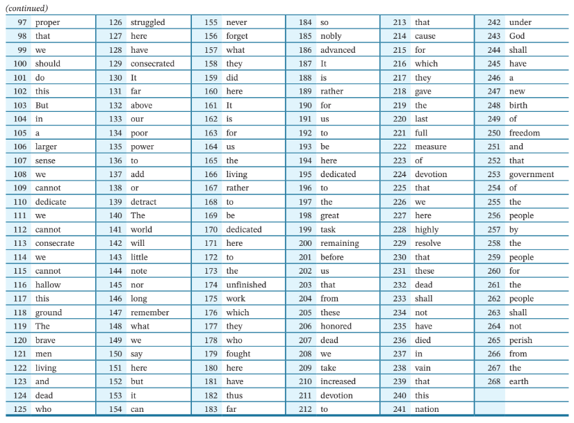
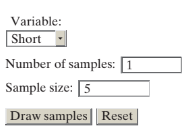
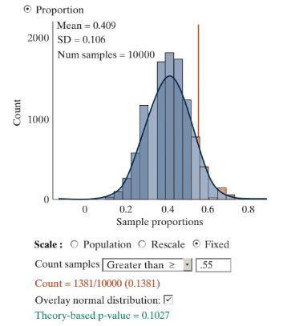

3-1 : Sampling from a finite population
MAT 2100: Introduction to Statistics
Grace College
Last updated September 24, 2024
The Jesus Creed
Hear, O Israel: The Lord our God, the Lord is one.
Love the Lord your God with all your heart and with all
your soul and with all your mind and with all your strength.
The second is this: Love your neighbor as yourself.
Literary Computing
Figure 1:
Exercise 1
Select a representative set of 10 words from the passage above by circling them with your pen or pencil.
The authorship of literary works is often a topic for debate. For example, researchers have tried to determine whether some of the works attributed to Shakespeare were actually written by Bacon or Marlow. The field of “literary computing” examines ways of numerically analyzing authors’ works, looking at variables such as sentence length and rates of occurrence of specific words.
Exercise 2
Complete the following data table by recording each word from your sample and then indicate the length of the word (number of letters) and whether or not the word is "short" (3 or fewer letters).

Exercise 3
Identify the observational units and the variables you have recorded on these observational units (Keep in mind that observational units do not have to be people!)
Definition 2:
Definition ():
The population is the entire collection of observational units of interest, and the sample is a subset of the population on which we record data.
The passage is, of course, Lincoln’s Gettysburg Address, given November 19, 1863, on the battlefield near Gettysburg, Pennsylvania. We are considering this passage a population of 268 words, and the 10 words you selected are a sample from this population. As before, we can use \(\hat{p}\) to refer to a sample proportion and \(\pi \) to refer to the parameter, this time the proportion of short words in the population.

Exercise 4
Do you think the sample proportion of short words you found will be a good estimate of the population proportion, \(\pi= 0.41 \) ? Why or why not?
Exercise 5
Suggest a method for deciding whether the sample proportion of short words is likely to be close to the population proportion of short words. (Hint: Whereas any one sample may not produce a statistic that exactly equals the population parameter, what would we like to be true in general?)
Exercise 6
Combine your results with your classmates’ by producing a dotplot of the distribution of the proportion of short words in your samples.
Exercise 7
What label should be along the horizontal axis of this graph? How many dots do you have? In other words, clarify what each dot represents. (Hint: If you wanted to add another dot to the graph, what would you need to do?)
Exercise 8
Based on the class dotplot, does this sampling method tend to produce sample proportions close to the population proportion, 0.41? Justify your answer.
Definition 3:
Definition ():
A sampling method is biased if, when using that sampling method, statistics from different samples consistently overestimate or consistently underestimate the population parameter of interest.
Note that bias is a property of a sampling method, not a property of an individual sample. Also note that the sampling method must consistently produce nonrepresentative results in the same direction in order to be considered biased
Exercise 9
Does asking you to quickly select 10 representative words appear to be a biased or unbiased sampling method? If biased, what is the direction of the bias (tendency to overestimate or underestimate the proportion of short words)?
Exercise 10
Explain why we might have expected this sampling method (asking you to quickly pick 10 representative words) to be biased for this variable.
Exercise 11
Do you think that if we’d asked each of you to take 20 words instead of 10 words it would have helped with this issue? Explain.
Exercise 12
Suggest another technique for selecting 10 words from this population in order for the sampling method to be unbiased and likely to produce samples that are representative of the population proportion of short words.
Taking a Simple Random Sample
Remark 4:
Key Idea .
A simple random sample ensures that every sample of size n is equally likely to be the sample selected from the population. In particular, each observational unit has the same chance of being selected as every other observational unit.
The key to obtaining a representative sample is using some type of random mechanism to select the observational units from the population, rather than relying on convenience samples or any type of human judgment.
Definition 5:
Definition ():
A convenience sample is a nonrandom sample of a population.
Instead of having you choose “random” words using your own judgment, we will now ask you to take a simple random sample of words and evaluate your results. The first step is to obtain a sampling frame—a complete list of every member of the population where each member of the population can be assigned a number. Below is a copy of the Gettysburg Address that includes numbers in front of every word. For example, the 43rd word is “nation”. Note: In this sampling frame, “four score” is listed as two words.
Exercise 13a:
Go to the Random Numbers applet (or random.org).
Specify that you want 5 Numbers per replication in the range from 1 to 268.
Press Generate to view the 5 random numbers.
Enter the random numbers in the table below:

Randomly generated five ID values from 1 to 268:

Exercise 13b:
Using your randomly generated numbers, look up the corresponding word from the sampling frame. Fill in the data table below.

Figure 6:

Figure 7:

Exercise 14
Let’s examine your sample of five words, as well as those of your classmates.
Exercise 14a:
Calculate the proportion of short words in your random sample.
Exercise 14b:
Again, produce a dotplot of the distribution of proportions of short words for your sample and those of your classmates. Make sure you label the horizontal axis appropriately.
Exercise 14c:
Comment on how this distribution compares to your class’ dotplot of sample proportions from [REF=TODO] which used nonrandom sampling.
Exercise 14d:
Does this second method appear to be an unbiased sampling method? How are you deciding?
Let’s use technology to take even more random samples.
- Open the Sampling Words applet.
- Use the Variable pull down menu, to choose "Short". Confirm the population proportion is 0.41.
- Check the Show Sampling Options box. Specify 5 in the Sample Size box and press the Draw Samples button.

You will see the five selected words appear in the box below. You will also see five blue dots within the population distribution representing the five words you have sampled (and whether they are short). These five yes/no outcomes for your sample are also displayed in a dotplot in the middle panel. The blue triangle indicates the proportion of short words in this sample. This value also appears on the Sampling Distribution graph to the right. Press Draw Samples again.
Exercise 15
Did you get the same sample this time? Did you get the same sample proportion?
Exercise 16
Suppose you take 1,000 different random samples and examined the distribution of the 1,000 sample proportions. Where do you think this distribution will be centered? What shape do you think it will have? Predict the largest and smallest values.
Exercise 17
Change the Number of samples from 1 to 9998, for a total of 10,000 samples and press Draw Samples. Describe the behavior of the distribution of sample proportions and contrast it with your prediction, as well as to the class distribution of nonrandom samples using 10 words.
Definition 8:
Definition ():
A sampling distribution is the distribution of a statistic for all possible samples of size n randomly selected from the same population. By taking lots of samples, you can approximate this sampling distribution.
The following table outlines the simulation process you are using to approximate the sampling distribution of sample proportions of short words from the Gettysburg Address.
Table 9:
| Population | All 268 words in the Gettysburg Address |
| Parameter | Proportion of words in the population that are short (\(\pi = 0.41\)) |
| Sample | 5 randomly selected words |
| Statistic | Proportion of sampled words that are short ( \(\hat p\) varies from sample to sample) |
One big change between the random samples and the previous convenience samples is the center of the sampling distribution should now be close to \(\pi \text{,}\) the population proportion. In other words, simple random sampling is an unbiased sampling method because there is no tendency to over- or underestimate the parameter.
Remark 10:
Key Idea .
The mean of the sampling distribution of sample proportions for all possible simple random samples from a population with success proportion \(\pi \) will be equal to \(\pi \text{.}\)
As we saw, this sampling method (taking 5 randomly selected words) is better (unbiased) even though we selected fewer words.
Sampling Distribution of Sample Proportions
Based on what you learned about sample proportions previously, you should not be too surprised that the distribution of sample proportions you produced in [REF=TODO] is somewhat symmetric (because \(\pi \) is close to 0.50), with a mean close to 0.41 (because the sampling method is unbiased). In fact, our previous formula for the standard deviation of sample proportions, \(\sqrt{\dfrac{\pi(1 - \pi)}{n}}\text{,}\) still works as well!
Exercise 18
Verify that the standard deviation of your 10,000 sample proportions is close to the standard deviation of sample proportions defined above. (Hint: What values are you using for \(\pi \) and n?)
Remark 11:
Key Idea .
When sampling from a large population, the standard deviation of sample proportions is estimated by the same formula,
where \(\pi \) represents the proportion of successes in the population and n represents the sample size. The population size is considered large enough when it is more than 20 times that sample size.
Notice one new aspect here compared to earlier: When we are sampling from a finite population rather than from an infinite random process, we want the population to be large in order to assume \(\pi \) represents a constant probability of success. In this case, \(268 > 200( = 20 \times 10)\text{,}\) and the formula should apply. In which case, we can use the same theory-based methods we used before.
Exercise 19
How would our prediction of the behavior (shape, mean, largest value/smallest value) of the distribution of sample proportions change if the population size had been 2,680?
Exercise 20
Name two things that do impact the standard deviation of the distribution of sample proportions.
Exercise 21
In the applet, select the radio button labeled Fixed. Then change the Sample size from 5 to 10 and the Number of samples from 9,998 to 10,000. Press Draw Samples and describe the behavior of the new sampling distribution. Does the standard deviation change as you predicted? Is the sampling method still unbiased? How are you deciding?
Exercise 22
Repeat [REF=TODO] for a sample size of 20.
Keep in mind that our population size (268) is not all that large here and you may start to see some discrepancies with the standard deviation formula with samples of 20 or more (Why?). But also notice that the shape of the distribution of sample proportions is looking more and more like a normal distribution as we increase the sample size, just as you saw previously.
Remark 12:
Key Idea .
The Central Limit Theorem for sampling from a large finite population says that the distribution of sample proportions from repeated random samples will be approximately normal if there at least 10 successes and at least 10 failures in each sample.
In the following figure, we have overlaid the normal distribution predicted by the Central Limit Theorem and determined the proportion of samples and the theoretical probability for a sample proportion of 0.55 and higher.
Figure 13:

Exercise 23
Does the normal approximation appear to be valid here? Which value (0.1381 or 0.1027) do you trust more? Explain your reasoning.
Other Considerations
Another key property of our sampling method is that we had a list of every word in the population. This list is referred to as a sampling frame. An incomplete sampling frame (e.g., only the first paragraph of the speech) would also produce a biased sampling method if the observational units not in the sampling frame were systematically different from the rest of the population.
Remark 14:
Key Idea .
If a sampling frame does not include every member of the population (e.g., last paragraph missing, nouns not listed), then we cannot claim to represent those segments in the population with our sample. An incomplete sampling frame can also lead to biased sampling.
You also need to be sure there are not any other nonsampling concerns. These represent problems that arise even with a carefully selected sample. For example, suppose we were not able to accurately measure the lengths of the words. Or, different individuals used different definitions of "short."
Remark 15:
Key Idea .
In addition to carefully selecting the sample, you need to guard against other possible sources of bias as well. For example, when talking to people, their suspect memories and truthfulness can impact people’s answers. Other examples of nonsampling concerns include the effects that the wording of a question can have on people’s responses (e.g., how extreme the phrasing is), the effects that the interviewer can have by virtue of their demeanor, sex, race, and other characteristics, using an uncalibrated scale, and so on.
See Example 2.1 for additional discussion of nonsampling concerns.
Exploring Further
Exercise 24
As part of the General Social Survey in 2018, a random sample of U.S. adults were asked whether at least one of their grandparents was born outside the United States. In the sample of 2,214 respondents, 881 said "yes."
Exercise 24a:
Define the parameter of interest in words. Do you know its value (if so, what is it)?
Exercise 24b:
Describe the statistic in words. Do you know its value (if so, what is it)?
Exercise 24c:
Do you consider this sample of 2,214 U.S. adults to be generalizable to the roughly 253,881,929 U.S. adults in 2018? Explain why or why not.
Exercise 24d:
Suppose we assume the population proportion is 0.50. If we were to predict the behavior of the distribution of sample proportions, what do you predict for: Mean? Standard deviation? Shape?
Exercise 24e:
Based on the observed sample proportion, is it plausible that the observed sample came from a population with \(\pi = 0.50\text{?}\) Be clear how you are deciding.
Exercise 24f:
Is it plausible that the observed sample came from a population with \(\pi = 0.40\text{?}\) Explain how you are deciding.
Exercise 24g:
Do you have any reason to suspect the respondents could be giving misleading information to this question? What are the implications of your answer?